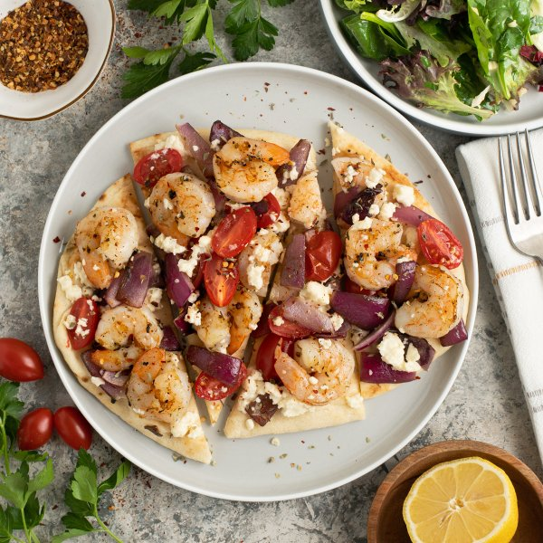

Grilled Shrimp, Onion & Tomato Pizza with Lemon-Parsley Mixed Greens

Prep Time
40 min
Nutrition (per serving)
699.9 kcalCalories
40.3 gProtein
68.2 gCarbs
29.7 gFat
Full nutrition table
| Calories | 699.9 kcal |
| Total fat | 29.7 g |
| Saturated fat | 14.3 g |
| Trans fat | 0.9 g |
| Cholesterol | 276.7 mg |
| Sodium | 1675.9 mg |
| Carbohydrates | 68.2 g |
| Fiber | 5.5 g |
| Sugars | 8.6 g |
| Protein | 40.3 g |
| Potassium | 823.7 mg |
| Calcium | 366.8 mg |
| Iron | 5.8 mg |
| Vitamin A | 1443.4 IU |
| Vitamin C | 42.9 mg |
| Vitamin D | 17.5 IU |
Cookware
Ingredients
- 1 (4 oz) pkgcrumbled feta cheese
- 4flatbreads or naan
- 2 clovesgarlic
- 1 pintgrape tomatoes
- 1 small bunchItalian (flat-leaf) parsley
- 1lemon
- 1 ½ lbraw peeled shrimp, fresh or frozen
- 2 mediumred onions
- 1 (5 oz) pkgspring mix (mixed greens)
- black pepper
- crushed red pepper
- Dijon mustard
- extra virgin olive oil
- Italian seasoning
- oregano, dried
- salt
Steps
- Preheat oven to 450°F.
- Wash and dry the fresh produce. (Skip the mixed greens if they came pre-washed.)1 small bunch Italian (flat-leaf) parsley
1 lemon
1 pint grape tomatoes
1 (5 oz) pkg spring mix (mixed greens) - If using frozen shrimp, place them in the colander and run under cold water to thaw them slightly and remove any ice crystals. (If using fresh shrimp, skip this step.) Place the shrimp on a clean towel or paper towels and pat dry.1 ½ lb raw peeled shrimp, fresh or frozen
- Transfer shrimp to a plate; drizzle with oil and season with spices on both sides, then set aside.2 tsp extra virgin olive oil
1 tsp Italian seasoning
1 tsp salt
½ tsp black pepper - Preheat a grill pan or regular skillet over medium-high heat.
- While the pan heats up, peel, halve, and cut onions lengthwise into 1-inch wide wedges.2 medium red onions
- Once the grill pan is hot, working in batches if necessary, add shrimp and onion; cook, turning occasionally, until the shrimp are cooked through and onion is tender, 4-5 minutes. Remove to a clean plate.
- Meanwhile, peel and mince garlic; place in a medium bowl.2 cloves garlic
- Shave parsley leaves off the stems; discard stems and mince the leaves. Add to the bowl with the garlic.
- Juice lemon into the bowl, then add oil, Dijon, salt, and pepper. Whisk to combine the dressing and set aside.4 tsp extra virgin olive oil
1 tsp Dijon mustard
½ tsp salt
¼ tsp black pepper - Halve tomatoes.
- Divide flatbreads between two baking sheet pans; top with grilled shrimp and onion, tomatoes, and feta. Sprinkle with oregano and crushed red pepper.4 flatbreads or naan
1 (4 oz) pkg crumbled feta cheese
1 tsp oregano, dried
¼ tsp crushed red pepper - Place baking sheets in the oven and bake until the cheese starts to melt, about 5 minutes. Remove from oven and cut into wedges.
- Meanwhile, add mixed greens to the bowl with the dressing and toss to combine the salad.
- To serve, divide pizza and salad between plates. Enjoy!